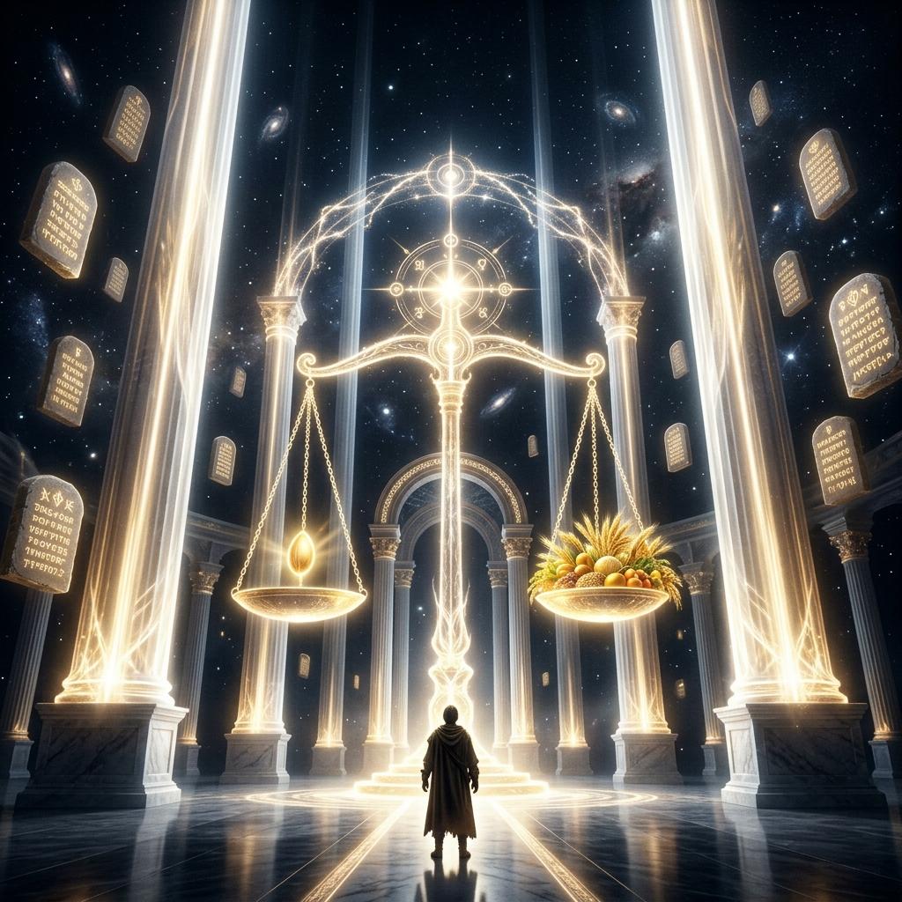

The Architecture of Kingdom Systems
THE LAWS THAT RUN
THE KINGDOM
Why God is Not a Slot Machine
God does not operate on caprice. He operates by a system governed by reliable, predictable principles. A law correctly engaged produces outcomes — predictably. Consistently. Violate the law, and sincerity alone will not save you.
⚖️ The Just Judge Thesis
"Do not be deceived, God is not mocked; for whatever a man sows, that he will also reap. ...There is no respect of persons with God."
If two farmers plant the same seed, in the same soil, in the same season, with the same care — they get the same harvest. It does not matter which farmer prays more. The law of seed and harvest does not check your prayer consistency before deciding whether to produce. It produces because it is a law. And laws do not negotiate.
God is a just Judge. Uninformed sincerity will not override the system you are violating.
THE CORE PARADIGM
A person who aligns with kingdom laws will produce kingdom results — regardless of their history. The system is perfectly fair.
🗺 The Kingdom Laws Architecture
Click or tap any node to reveal the deep insight behind it.
THE 3 LAYERS OF SPIRITUAL POWER
🧩 The Hierarchy of Power
MIRACLES DO NOT BREAK LAWS
A miracle is not God breaking the rules. A miracle is God applying a rule of a higher order.
Think of it like a higher court superseding a lower court's ruling. When Jesus walked on water, He did not break the law of gravity — He operated from a dimension of authority that superseded it.
THE CRITICAL DIFFERENCE
Virtue vs. Skill
Virtue is the foundation — the fruit of the Spirit, the character of God. It determines longevity and integrity.
Skill is the vehicle — the transactable competence in the marketplace. Virtue that cannot do anything useful is private holiness. Admirable, but not functional in the marketplace. God builds both: Wisdom to know what to do, operating through Character that can be trusted.
📡 The 10 Kingdom Laws — Activation Lab
These ten laws are reliable principles that produce the same outcome every time they are correctly engaged.
Select a Kingdom Law
Explore the mechanics of the 10 laws that govern spiritual and practical reality.
🔓 The Execution Blueprint & Traps
THREE FATAL TRAPS
Trap 1: Emotional Sovereignty
Trap 2: Ignoring the Mind
Trap 3: Doctrine from Encounter
THE 3-PHASE BLUEPRINT
Identify the Void
Audit the persistent failure. Trace the mindsets. Name the specific violated law.
Demolish & Reconstruct
Change exposure. Feed the specific truth. Engage the named law intentionally.
Intimacy & Enforcement
Access Layer 1. Operate from the secret place to overrule delayed manifestations.
🪞 The Ultimate Audit Question
In the area of your life where you are most frustrated with your results — have you identified which law is being violated or not engaged?
Because the results you are experiencing are not random.
They are predictable. Which means they are also fixable.
🔥 The Closing Declaration
LAWS ACTIVATED
"I recognize that the kingdom is perfectly just and perfectly reliable. I commit to finding the law, engaging the law, and letting the system produce what it was designed to produce from a foundation of deep intimacy."